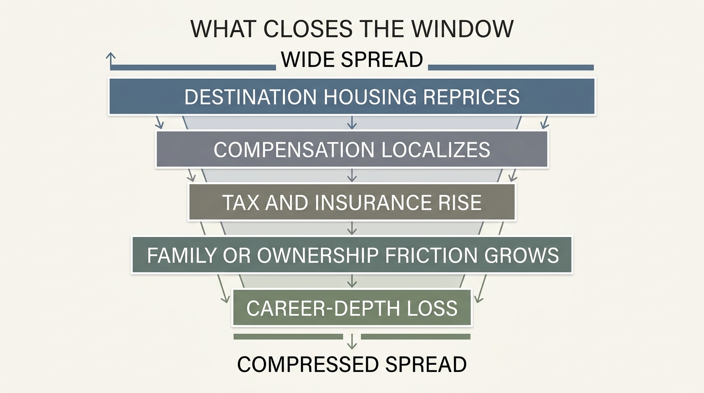

The Geographic Arbitrage Window
For a while, one household can sell labor into an expensive market and buy life in a cheaper one. That spread feels like a permanent law when it is working. It is not. Geographic arbitrage is usually a window, not a birthright. The spread exists only as long as income, housing, tax, and mobility systems have not fully adjusted to each other.
Established fact: U.S. prices differ materially across states and metropolitan areas, and housing is one of the largest drivers of that gap. Established fact: migration patterns and mobility rates remain uneven, which means households do not instantly arbitrage away every local spread. Established fact: some workers can still earn against one market while consuming in another, especially when skills, clients, or employers remain portable. The inference is that a real wealth window can open. The mistake is assuming it stays open automatically.
Core thesis: geographic arbitrage is the temporary spread between where your income is priced and where your cost structure is incurred. The window is widest when earnings portability is real, local prices have not fully converged, and moving friction is low. It narrows when remote-work premiums compress, destination housing resets upward, taxes or insurance catch up, or family and career constraints make the move hard to reverse.

Why The Window Exists
Labor markets, housing markets, and tax regimes do not move at the same speed. A worker may be paid according to the norms of a high-output city, a specialized employer cluster, or a national client base while living in a place with lower housing rents, lower service prices, shorter commute burden, or weaker local competition for land. If that mismatch persists, the household converts geography into savings rate, runway, and optionality.
The logic is broader than remote work alone. Some arbitrage comes from hybrid arrangements, some from owner-operated businesses selling into richer markets, some from digital services, and some from families relocating after asset sales or career transitions. What matters is the spread between income source and local cost stack, not the romantic idea of moving somewhere cheap.
Why It Is Better Understood As A Window
Good arbitrage attracts followers. Once enough households notice a lower-cost destination with acceptable amenities, housing responds. Insurance and tax burdens can rise. Service pricing firms up. Local infrastructure strain shows up in commute time, school competition, or permit friction. Employers also adapt. Remote-work flexibility can tighten, or compensation can be localized more aggressively. The spread that looked structural starts behaving like a closing trade.
This is why many geographic moves disappoint households that underwrite only today’s rent or house price. The durable question is not whether a place is cheaper now. It is whether the income source remains portable, whether the cost advantage survives after taxes and recurring ownership burden, and whether the household can still move again if the spread compresses. Arbitrage without reversibility is often just a new form of path dependence.
The Highest-Value Version Of Arbitrage
The strongest version is usually not the lowest-cost destination. It is the destination with the best ratio of cost relief to income preservation. A city or region can be cheaper and still be a poor arbitrage choice if it weakens labor-market depth, slows future salary repricing, limits client access, or adds insurance and ownership friction. Wealth improves most when the household protects the earnings engine while lowering the carry stack around it.
That is why this topic connects directly to The Mobility Premium. Geographic arbitrage only works when a household still has freedom to react again later. A move that captures one spread but destroys future flexibility may raise near-term savings while lowering long-term optionality.
What Usually Closes The Window
- Housing convergence. A destination with strong inbound demand often reprices faster than movers expect, especially in rents and owner carry.
- Compensation localization. Employers may narrow pay if the worker is no longer tied to the original market or if remote work becomes more standardized.
- Tax and insurance catch-up. A cheaper sticker market can still become less attractive once property tax, homeowners insurance, or local fee regimes reset upward.
- Mobility friction. Family logistics, school commitments, visa issues, caregiving, or homeownership can turn a theoretically reversible move into a one-way bet.
- Career-depth loss. A household may save more immediately but lose access to dense opportunity networks, faster promotion paths, or industry adjacency over time.
These closing forces do not mean arbitrage is dead. They mean the opportunity should be treated like any other spread trade: wide enough to matter, but always vulnerable to convergence and friction.

How To Underwrite A Move More Honestly
Most households compare headline salary and housing cost. That is not enough. A better underwriting process uses after-tax income, housing plus insurance plus commuting, expected duration of wage portability, local career depth, and the cost of reversing the move. The move should be treated as a portfolio decision with concentration and liquidity characteristics, not as a lifestyle swap with a spreadsheet attached.
The cleanest arbitrage often comes from preserving national or premium-market earnings while shifting the local cost base only partway down, into a city with enough infrastructure and labor depth to avoid trapping the household. Extreme cheapness can fail if it reduces future opportunity too much. The best move is often moderate arbitrage with high reversibility.
Known, Inferred, And Unknown
| Category | Assessment |
|---|---|
| Known | Census and IRS data show that mobility and migration flows are real but uneven, which means local spreads do not disappear instantly. |
| Known | BEA regional price parities show large differences in price levels, including especially wide variation in housing rents across states and metro areas. |
| Known | BLS wage data show that labor-market pricing still varies by occupation and place, so earnings potential and living cost remain partially separable for some workers. |
| Inferred | The best arbitrage opportunities are temporary because destination markets, employer policy, and household friction eventually compress the spread. |
| Unknown | How long any specific destination spread will remain attractive after housing repricing, policy changes, and labor-market normalization are fully absorbed. |
The Practical Reading For 2026
The useful frame is not “move to somewhere cheaper.” It is “capture a spread while it is still wide enough, and preserve the ability to re-evaluate when convergence starts.” Geographic arbitrage is strongest when it raises savings, lowers fixed costs, and leaves future career and mobility options intact. It is weakest when it is used to justify buying illiquid housing into a fast-repricing destination or to escape costs while quietly giving up the market that supported the original income.
This is why the window matters more than the place. Places change. Tax regimes change. Remote-work rules change. Insurance markets change. The household that understands the opportunity as a window can measure the spread, exploit it deliberately, and leave before the trade becomes a trap. The household that treats it as a permanent identity story often stays too long.
Further Reading Inside The Site
This article connects directly to The Mobility Premium, One Salary, Three Futures, The Rent vs Buy Reversal, and The 2026 Housing Stall. Together they show why place changes wealth through labor pricing, housing carry, and the option value of staying movable.
Source List
U.S. Census Bureau. Geographic Mobility: 2023. Released December 2024.
Internal Revenue Service. SOI Tax Stats - Migration Data. Accessed May 4, 2026.
U.S. Bureau of Economic Analysis. Regional Price Parities by State and Metro Area. Current release February 19, 2026.
U.S. Bureau of Economic Analysis. Regional Price Parities, Real Personal Consumption Expenditures, and Real Personal Income Methodology. Accessed May 4, 2026.
U.S. Bureau of Labor Statistics. Occupational Employment and Wage Statistics Overview. Accessed May 4, 2026.
Stress-test the lifespan side of this balance-sheet story.
Open the matching LifeMeter scenario with a prefilled planning profile so the wealth case and the health-runway case can be read together.